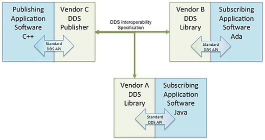

Служба распространения данных (DDS ) для систем реального времени - это группа управления объектами (OMG) межмашинная связь (иногда называемый промежуточным программным обеспечением или структурой подключения), который направлен на обеспечение надежного, высокопроизводительного, взаимодействия, реального- time, масштабируемый обмен данными с использованием шаблона публикация – подписка.
DDS удовлетворяет потребности таких приложений, как аэрокосмическая и оборонная промышленность, управление воздушным движением, автономные транспортные средства, медицинские устройства, робототехника, производство электроэнергии, моделирование и тестирование, управление интеллектуальными сетями, транспортные системы и другие приложения, требующие обмена данными в реальном времени.
Содержание
1 Архитектура
1.1 Модель
1.2 Функциональная совместимость
2 История
3 См. Также
4 Ссылки
Архитектура
Модель
DDS - это сетевое промежуточное ПО, которое упрощает сложное сетевое программирование. Он реализует шаблон публикация-подписка для отправки и получения данных, событий и команд между узлами. Узлы, производящие информацию (издатели), создают «темы» (например, температуру, местоположение, давление) и публикуют «образцы». DDS доставляет образцы подписчикам, которые проявляют интерес к этой теме.
DDS выполняет рутинные операции по передаче: адресация сообщений, маршаллинг и де-маршаллинг данных (так что подписчики могут находиться на разных платформах от издателя), доставка, управление потоком, повторные попытки и т. Д. Любой узел может быть издателем, подписчиком или обоими одновременно.
Модель публикации-подписки DDS практически исключает сложное сетевое программирование для распределенных приложений.
DDS поддерживает механизмы, выходящие за рамки базовой модели публикации-подписки. Ключевым преимуществом является то, что приложения, использующие DDS для обмена данными, не связаны. На обработку их взаимодействия нужно потратить немного времени на разработку. В частности, приложениям никогда не нужна информация о других участвующих приложениях, в том числе об их существовании или местонахождении. DDS прозрачно обрабатывает доставку сообщений, не требуя вмешательства со стороны пользовательских приложений, включая:
DDS позволяет пользователю указывать параметры качества обслуживания (QoS) для предварительной настройки механизмов обнаружения и поведения. Обмениваясь сообщениями анонимно, DDS упрощает распределенные приложения и поддерживает модульные, хорошо структурированные программы. DDS также автоматически обрабатывает горячую замену избыточных издателей, если основной выходит из строя. Подписчики всегда получают образец с наивысшим приоритетом, данные которого все еще действительны (то есть чей период действия, указанный издателем, не истек). Он автоматически переключается обратно на основной, когда он выздоравливает.
Взаимодействие
Доступны как коммерческие, так и программы с открытым исходным кодом реализации DDS. К ним относятся интерфейсы прикладного программирования (API) и библиотеки реализаций на Ada, C, C ++, C#, Java, Python, Scala, Lua, Pharo и Ruby. Поставщики DDS участвовали в демонстрациях совместимости на технических встречах OMG Spring с 2009 по 2013 год.
Во время демонстраций, каждый поставщик публиковал и подписывался на темы друг друга с помощью набора тестов, называемого демонстрацией фигур. Например, один поставщик публикует информацию о форме, а другие поставщики могут подписаться на эту тему и отображать результаты на собственном дисплее фигур. Каждый поставщик по очереди публикует информацию, а другой подписывается. Две вещи сделали демонстрации возможными: протокол DDS-I или протокол публикации-подписки в реальном времени (RTPS) и согласие на использование общей модели.

Функциональная совместимость службы распространения данных OMG
В марте 2009 года три поставщика продемонстрировали возможность взаимодействия между отдельными независимыми продуктами, которые реализовали протокол OMG Real-time Publish-Subscribe версии 2.1 с января 2009 года. Демонстрация включала обнаружение друг друга издатели и подписчики на разных платформах ОС (Microsoft Windows и Linux ) и поддерживали многоадресную передачу и одноадресную сетевую связь.
В демонстрации совместимости DDS использовались такие сценарии, как:
История
Разработка спецификации DDS началась в 20 01. Он был разработан Real-Time Innovations, государственным подрядчиком США, и Thales Group, французской оборонной компанией. В 2004 году группа управления объектами (OMG) опубликовала версию 1.0 DDS. Версия 1.1 была опубликована в декабре 2005 года, 1.2 - в январе 2007 года и 1.4 - в апреле 2015 года. DDS, в частности, защищена несколькими патентами США.
Спецификация DDS описывает два уровня интерфейсов:
Более низкий уровень публикации-подписки (DCPS), ориентированный на эффективную доставку нужной информации соответствующим получателям.
Дополнительный более высокий уровень локальной реконструкции данных (DLRL), который позволяет просто интегрировать DDS в прикладной уровень..
Другие связанные стандарты следовали за исходным базовым документом. Спецификация протокола проводной связи для взаимодействия с DDS в режиме реального времени гарантирует, что информация, опубликованная по теме с использованием реализации DDS одного поставщика, может быть использована одним или несколькими подписчиками, использующими реализации DDS одного или разных поставщиков. Хотя спецификация предназначена для сообщества DDS, ее использование не ограничено. Версия 2.0 была опубликована в апреле 2008 года, версия 2.1 - в ноябре 2010 года, 2.2 - в сентябре 2014 года и 2.3 - в мае 2019 года.
DDS для облегченной версии CCM (dds4ccm) предлагает архитектурный шаблон, который разделяет бизнес-логика из нефункциональных свойств. Расширение 2012 добавило поддержку потоков. В PSM на языке Java 5 для DDS определена языковая привязка Java 5, называемая платформо-зависимой моделью (PSM) для DDS. В нем указана только часть спецификации DDS, связанная с публикацией-подпиской, ориентированной на данные (DCPS); Кроме того, он включает API-интерфейсы DDS, представленные DDS-XTypes и DDS-CCM. DDS-PSM-Cxx определяет языковую привязку ISO / IEC C ++ PSM, называемую платформо-зависимой моделью (PSM) для DDS. Он предоставляет новый C ++ API для программирования DDS, более естественный для программиста на C ++. Спецификация обеспечивает сопоставления для интерфейса прикладного программирования (API), указанного в DDS-XTypes, и доступа к профилям качества обслуживания (QoS), указанным в DDS-CCM.
Расширяемые и динамические типы тем для DDS (DDS-XTypes) обеспечивают поддержку ориентированного на данные обмена данными публикация-подписка, когда темы определяются с помощью конкретных структур данных. Чтобы быть расширяемыми, разделы DDS используют типы данных, определенные до времени компиляции и используемые во всем глобальном пространстве данных DDS. Эта модель желательна, когда полезна проверка статического типа. Профиль Unified Modeling Language (UML) определяет домены и темы DDS, которые должны быть частью анализа и моделирования. Эта спецификация также определяет, как публиковать и подписывать объекты без предварительного описания типов на другом языке, таком как XML или OMG IDL. язык определения интерфейса (IDL) был указан в 2014 году независимо от главы 3 спецификации Common Object Request Broker Architecture (CORBA). Этот IDL 3.5 был совместим со спецификацией CORBA 3, но извлечен как собственная спецификация, позволяющая развиваться независимо от CORBA.
Начиная с DDS версии 1.4 в 2015 году, дополнительный уровень DLRL был перемещен в отдельную спецификацию.